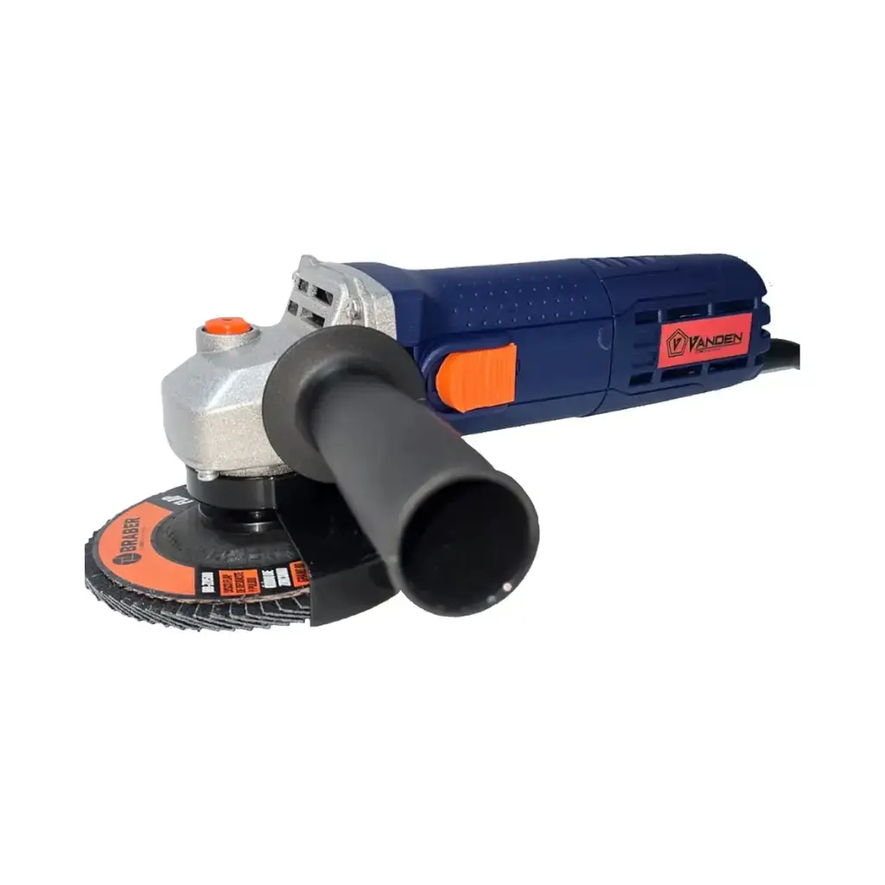
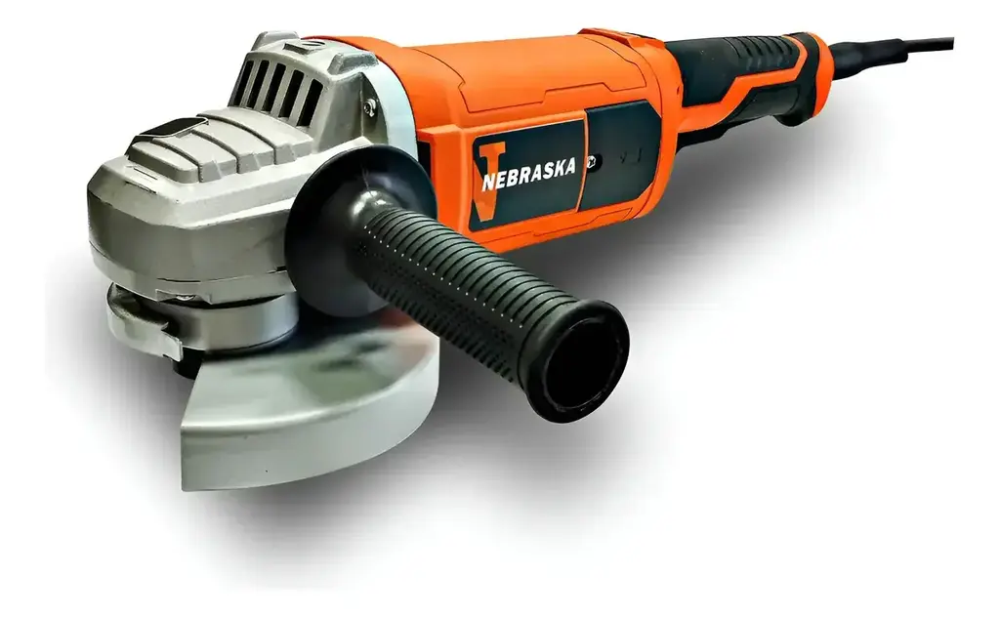
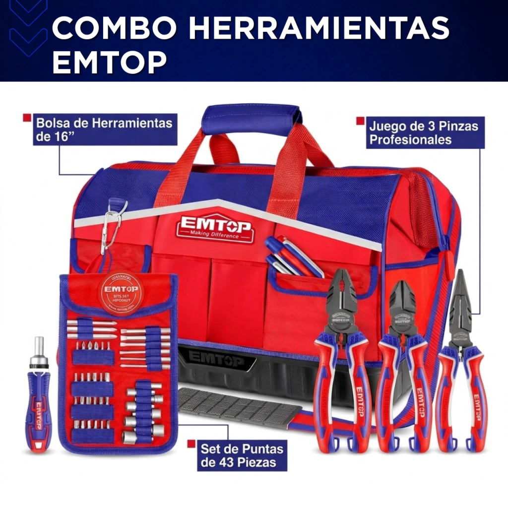
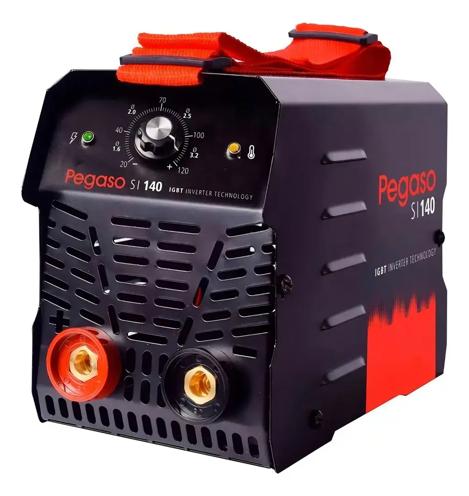

FOTO REAL DE GUIDO
en el mostrador
en el mostrador
FERRETERÍA INDUSTRIAL · VILLA LYNCH

Para cortes y terminaciones en hierro, chapa y cerámica.

180 mmCortes profundos y desbaste pesado.Para trabajo pesado“Se tomaron el tiempo para buscar la que yo necesitaba.”

TODO EN UNOPara armar tu primera caja de herramientas, completa.
La punta justa evita pelar el tornillo. Tenemos juegos para cada tipo de tornillo.

Compacta y portátil, para electrodo. Ideal para empezar.
Mandanos la lista de lo que necesitás y te cotizamos. Herramientas, insumos y equipos de las mejores marcas.

2 baterías de 4 Ah, cargador, 10 discos y 47 accesorios.
Mañana te cuento cuál conviene según tu trabajo.
— Guido
Dejanos tu opinión en Google. Nos ayuda a que más vecinos nos encuentren.
Pasá por el mostrador o hacé tu pedido por WhatsApp: te lo dejamos listo para retirar.
Mañana abrimos a las 8:00.
Mientras tanto, armá tu pedido en la web y te respondemos a primera hora.
Cerramos de 12:00 a 14:00. Dejanos tu consulta por WhatsApp y te respondemos a la vuelta.
Ex Hipólito Yrigoyen 4335, partido de General San Martín.
Volvemos el día hábil siguiente en el horario de siempre. Podés dejar tu pedido en la web.